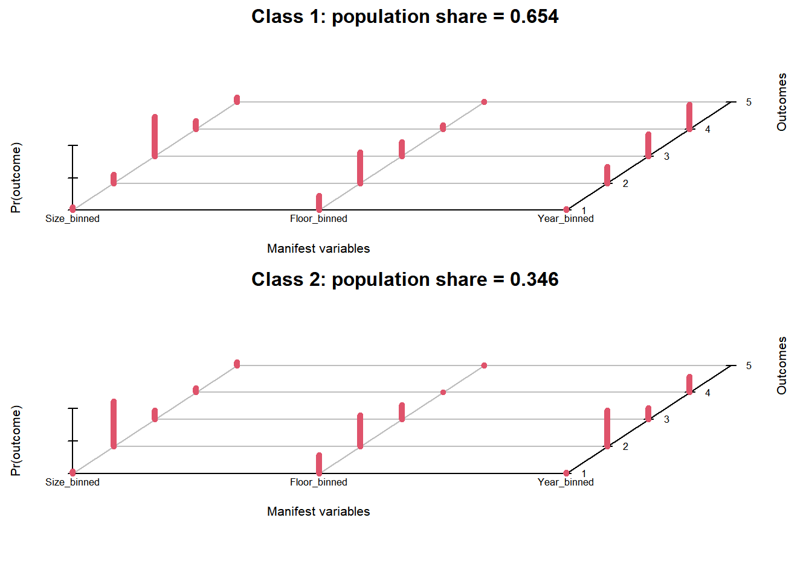
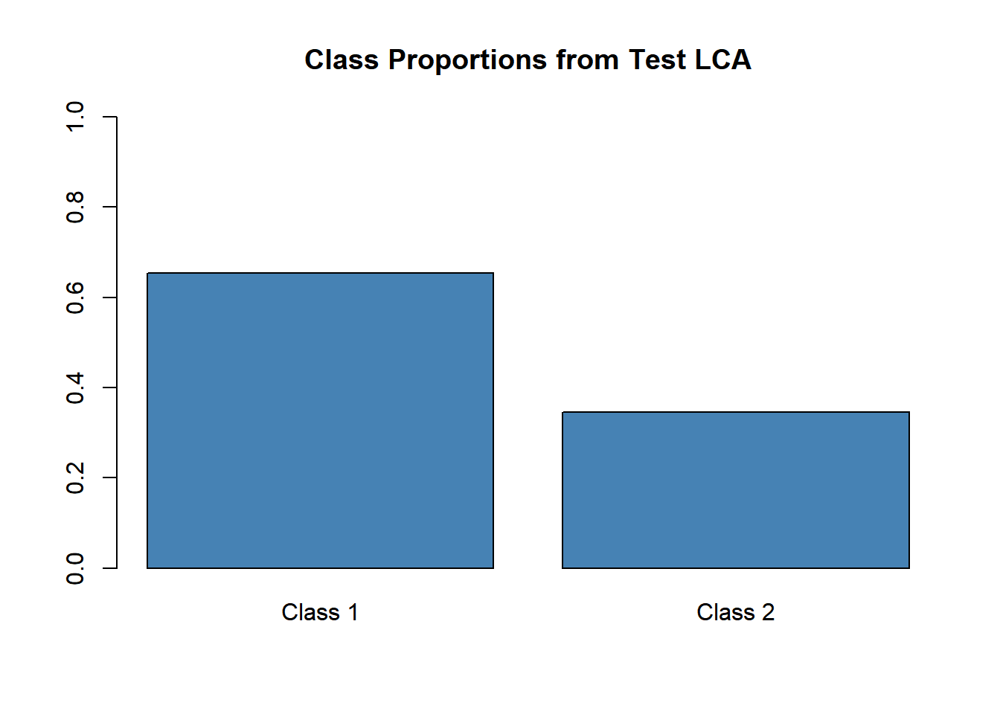
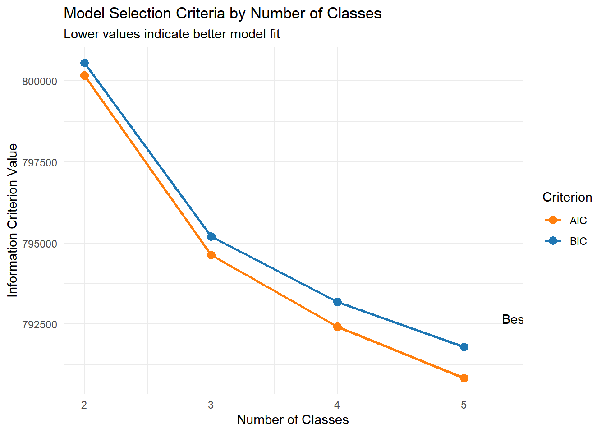
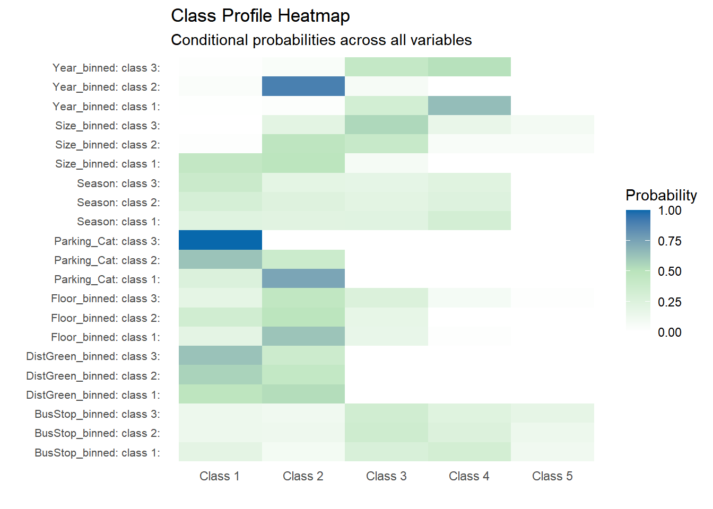
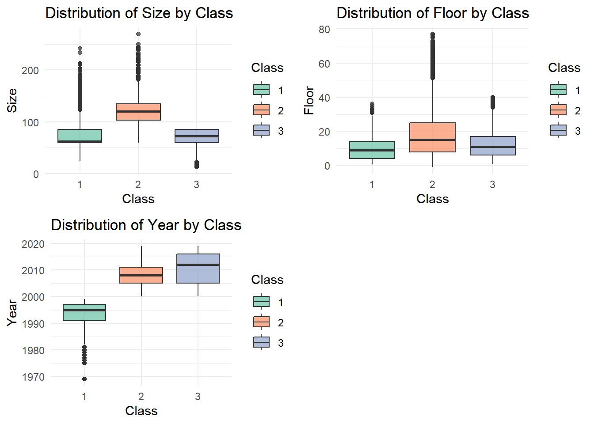
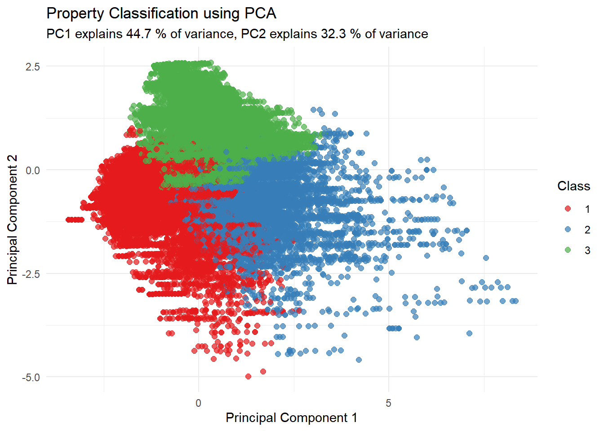
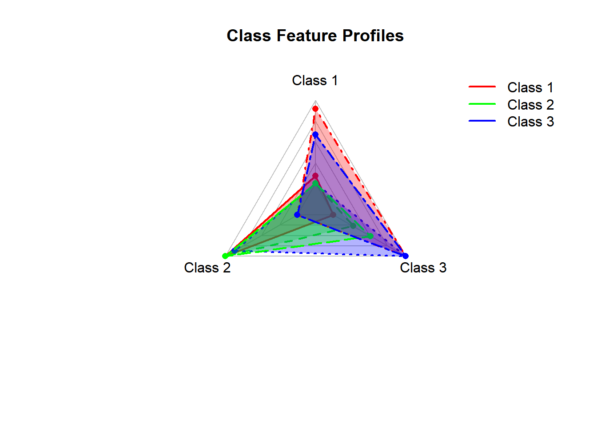

Explanatory Modeling for Real Estate Data: Latent Class Analysis Module
Author
Xiaohan Zhang
Published
March 26, 2025
Modified
March 24, 2025
Explanatory Modeling for Real Estate Data: Latent Class Analysis Module
1. Introduction
This document details the implementation of the Latent Class Analysis (LCA) module for our real estate data analysis Shiny application. Following the assignment requirements, I will focus on evaluating necessary R packages, preparing and testing R code, determining parameters and outputs for the Shiny application, and selecting appropriate UI components.
2. Necessary R Packages
The following R packages are required for the Latent Class Analysis module:
# Set a reliable CRAN mirroroptions(repos =c(CRAN ="https://cloud.r-project.org"))# Core packages listrequired_packages <-c(# Data processing and visualization packages"tidyverse", "ggplot2", "plotly", "DT",# Latent class analysis packages"poLCA", "mclust", "flexmix", "cluster",# Shiny implementation packages"shiny", "shinydashboard", "shinyWidgets")# Check if packages are installed, install if notnot_installed <- required_packages[!required_packages %in%installed.packages()[,"Package"]]if(length(not_installed) >0) {cat("Installing the following packages:", paste(not_installed, collapse=", "), "\n")install.packages(not_installed)}# Load all required packagessuppressMessages({for(pkg in required_packages) {library(pkg, character.only =TRUE) }})cat("All required packages have been loaded.\n")
All required packages have been loaded.
3. Data Preparation and Testing
3.1 Data Import and Preprocessing
# Import the dataset from Excel (xlsx)library(readxl)Property_data <-read_excel("data/Property_Price_and_Green_Index.xlsx")# Initial data explorationglimpse(Property_data)
# Test LCA with a small number of classes (2) for quick testingtest_formula <-as.formula(paste("cbind(", paste(names(lca_data)[1:3], collapse =","), ") ~ 1"))# Check if poLCA runs correctlyset.seed(123)test_lca <-poLCA(test_formula, data = lca_data, nclass =2, maxiter =10, verbose =FALSE)print("poLCA test successful")
[1] "poLCA test successful"
# Test model summary extractiontest_summary <-summary(test_lca)print("Model summary extraction test successful")
[1] "Model summary extraction test successful"
# Test class probability extractiontest_probs <- test_lca$probsprint("Class probability extraction test successful")
[1] "Class probability extraction test successful"
# Test prediction functiontest_pred <- test_lca$predclassprint("Class prediction test successful")
[1] "Class prediction test successful"
# Test BIC/AIC extractiontest_metrics <-c(BIC = test_lca$bic, AIC = test_lca$aic)print("Model fit metrics extraction test successful")
[1] "Model fit metrics extraction test successful"
3.4 Visualization of Latent Class Analysis Test Results
# Visualize the LCA test resultsplot(test_lca, main ="Latent Class Analysis Test Results")

# Display class proportions from testclass_props <- test_lca$Pbarplot(class_props, names.arg =paste("Class", 1:length(class_props)),main ="Class Proportions from Test LCA",col ="steelblue",ylim =c(0, 1))

4. Parameters and Outputs for Shiny Application
4.1 Parameters (Inputs)
Variables for Classification
Type: CheckboxGroupInput
Options: All categorical/binned variables in dataset
Default: Size_binned, Floor_binned, Year_binned, Season
The main panel will use a tabbed interface to organize different visualization outputs:
+-------------------------------------------------------+
| [Model Fit] [Class Profiles] [Class Summary] [Property Distribution] [Classification] |
|-------------------------------------------------------|
| |
| [Content changes based on selected tab] |
| |
| Tab 1: Model Fit |
| - Line chart showing BIC/AIC across class numbers |
| - Pie chart showing proportion of each class |
| |
| Tab 2: Class Profiles |
| - Dropdown to select variable |
| - Bar chart showing probability distribution for |
| each class across categories of selected variable |
| |
| Tab 3: Class Summary |
| - Table with summary statistics for each class |
| - Text description of class interpretations |
| |
| Tab 4: Property Distribution |
| - Dropdown to select numeric variable |
| - Box plots showing distribution of selected |
| variable across different classes |
| |
| Tab 5: Classification |
| - 2D scatter plot showing observations colored by |
| class membership (using dimension reduction) |
| |
+-------------------------------------------------------+
5.3 Additional Visualizations
5.3.1 Model Selection Visualization
# Function to compare multiple LCA modelscompare_lca_models <-function(lca_data, min_class =2, max_class =6) { results <-data.frame(Classes =numeric(),BIC =numeric(),AIC =numeric(),LogLik =numeric() )for(i in min_class:max_class) {cat("Fitting model with", i, "classes...\n")# Create formula f <-as.formula(paste("cbind(", paste(names(lca_data), collapse =","), ") ~ 1"))# Set seed for reproducibilityset.seed(123)# Fit model model <-poLCA(f, data = lca_data, nclass = i, maxiter =1000, tol =1e-5, nrep =5)# Store results results <-rbind(results, data.frame(Classes = i,BIC = model$bic,AIC = model$aic,LogLik = model$llik )) }return(results)}# Run comparisonmodel_comparison <-compare_lca_models(lca_data, 2, 5)
Fitting model with 2 classes...
Model 1: llik = -400040.5 ... best llik = -400040.5
Model 2: llik = -400040.5 ... best llik = -400040.5
Model 3: llik = -400040.5 ... best llik = -400040.5
Model 4: llik = -400040.5 ... best llik = -400040.5
Model 5: llik = -400040.5 ... best llik = -400040.5
Conditional item response (column) probabilities,
by outcome variable, for each class (row)
$Size_binned
Pr(1) Pr(2) Pr(3) Pr(4) Pr(5)
class 1: 0.1078 0.5289 0.3215 0.0227 0.0190
class 2: 0.0000 0.1769 0.5488 0.1717 0.1027
$Floor_binned
Pr(1) Pr(2) Pr(3) Pr(4) Pr(5)
class 1: 0.3156 0.5156 0.1645 0.0043 0.0000
class 2: 0.1935 0.4501 0.2695 0.0727 0.0142
$Year_binned
Pr(1) Pr(2) Pr(3) Pr(4)
class 1: 0.0194 0.6056 0.1538 0.2212
class 2: 0.0220 0.1652 0.3875 0.4253
$Season
Pr(1) Pr(2) Pr(3) Pr(4)
class 1: 0.2696 0.2463 0.2176 0.2665
class 2: 0.4007 0.1910 0.1831 0.2252
$DistGreen_binned
Pr(1) Pr(2)
class 1: 0.5222 0.4778
class 2: 0.6433 0.3567
$BusStop_binned
Pr(1) Pr(2) Pr(3) Pr(4) Pr(5)
class 1: 0.1474 0.1130 0.3408 0.2735 0.1253
class 2: 0.1314 0.1146 0.3430 0.2331 0.1779
$Parking_Cat
Pr(1) Pr(2) Pr(3)
class 1: 0.5217 0.4781 2e-04
class 2: 1.0000 0.0000 0e+00
Estimated class population shares
0.4385 0.5615
Predicted class memberships (by modal posterior prob.)
0.3916 0.6084
=========================================================
Fit for 2 latent classes:
=========================================================
number of observations: 52644
number of estimated parameters: 43
residual degrees of freedom: 11956
maximum log-likelihood: -400040.5
AIC(2): 800167.1
BIC(2): 800548.6
G^2(2): 25550.02 (Likelihood ratio/deviance statistic)
X^2(2): 42791.87 (Chi-square goodness of fit)
Fitting model with 3 classes...
Model 1: llik = -398377.3 ... best llik = -398377.3
Model 2: llik = -398377.3 ... best llik = -398377.3
Model 3: llik = -397248 ... best llik = -397248
Model 4: llik = -398377.3 ... best llik = -397248
Model 5: llik = -398377.3 ... best llik = -397248
Conditional item response (column) probabilities,
by outcome variable, for each class (row)
$Size_binned
Pr(1) Pr(2) Pr(3) Pr(4) Pr(5)
class 1: 0.0000 0.2056 0.5466 0.1617 0.0861
class 2: 0.0153 0.4732 0.4043 0.0534 0.0539
class 3: 0.4386 0.4860 0.0745 0.0010 0.0000
$Floor_binned
Pr(1) Pr(2) Pr(3) Pr(4) Pr(5)
class 1: 0.1920 0.4512 0.2652 0.0767 0.0149
class 2: 0.3389 0.4825 0.1781 0.0005 0.0000
class 3: 0.1987 0.6197 0.1657 0.0160 0.0000
$Year_binned
Pr(1) Pr(2) Pr(3) Pr(4)
class 1: 0.0145 0.0450 0.4279 0.5126
class 2: 0.0340 0.8975 0.0685 0.0000
class 3: 0.0056 0.0215 0.3241 0.6488
$Season
Pr(1) Pr(2) Pr(3) Pr(4)
class 1: 0.3881 0.1962 0.1877 0.2281
class 2: 0.3070 0.2410 0.2067 0.2453
class 3: 0.2317 0.2221 0.2244 0.3217
$DistGreen_binned
Pr(1) Pr(2)
class 1: 0.6278 0.3722
class 2: 0.5656 0.4344
class 3: 0.4741 0.5259
$BusStop_binned
Pr(1) Pr(2) Pr(3) Pr(4) Pr(5)
class 1: 0.1321 0.1105 0.3425 0.2343 0.1806
class 2: 0.1318 0.1263 0.3560 0.2560 0.1299
class 3: 0.2001 0.0850 0.2848 0.3233 0.1068
$Parking_Cat
Pr(1) Pr(2) Pr(3)
class 1: 1.0000 0.0000 0e+00
class 2: 0.6235 0.3763 3e-04
class 3: 0.2587 0.7413 0e+00
Estimated class population shares
0.535 0.3701 0.0949
Predicted class memberships (by modal posterior prob.)
0.5416 0.3801 0.0784
=========================================================
Fit for 3 latent classes:
=========================================================
number of observations: 52644
number of estimated parameters: 65
residual degrees of freedom: 11934
maximum log-likelihood: -397248
AIC(3): 794626
BIC(3): 795202.6
G^2(3): 19964.89 (Likelihood ratio/deviance statistic)
X^2(3): 29789.45 (Chi-square goodness of fit)
Fitting model with 4 classes...
Model 1: llik = -396122.3 ... best llik = -396122.3
Model 2: llik = -397567.7 ... best llik = -396122.3
Model 3: llik = -396284.7 ... best llik = -396122.3
Model 4: llik = -396122.4 ... best llik = -396122.3
Model 5: llik = -396560 ... best llik = -396122.3
Conditional item response (column) probabilities,
by outcome variable, for each class (row)
$Size_binned
Pr(1) Pr(2) Pr(3) Pr(4) Pr(5)
class 1: 0.0000 0.0523 0.5740 0.2461 0.1277
class 2: 0.4599 0.4606 0.0781 0.0014 0.0000
class 3: 0.0283 0.5156 0.3996 0.0326 0.0240
class 4: 0.0002 0.3311 0.4903 0.1051 0.0733
$Floor_binned
Pr(1) Pr(2) Pr(3) Pr(4) Pr(5)
class 1: 0.1277 0.3463 0.2882 0.1959 0.0419
class 2: 0.1937 0.6186 0.1694 0.0183 0.0000
class 3: 0.3824 0.4712 0.1456 0.0009 0.0000
class 4: 0.2405 0.5084 0.2440 0.0072 0.0000
$Year_binned
Pr(1) Pr(2) Pr(3) Pr(4)
class 1: 0.0000 0.0000 0.4038 0.5962
class 2: 0.0073 0.0000 0.3328 0.6599
class 3: 0.0143 0.9236 0.0621 0.0000
class 4: 0.0343 0.3013 0.3330 0.3314
$Season
Pr(1) Pr(2) Pr(3) Pr(4)
class 1: 0.4785 0.1353 0.1677 0.2186
class 2: 0.2389 0.2168 0.2229 0.3215
class 3: 0.2940 0.2464 0.2091 0.2505
class 4: 0.3323 0.2315 0.2006 0.2356
$DistGreen_binned
Pr(1) Pr(2)
class 1: 0.7367 0.2633
class 2: 0.4827 0.5173
class 3: 0.5550 0.4450
class 4: 0.5691 0.4309
$BusStop_binned
Pr(1) Pr(2) Pr(3) Pr(4) Pr(5)
class 1: 0.1692 0.0365 0.3686 0.1679 0.2578
class 2: 0.2060 0.0833 0.2825 0.3208 0.1074
class 3: 0.1415 0.1054 0.3748 0.2378 0.1405
class 4: 0.1130 0.1532 0.3274 0.2762 0.1302
$Parking_Cat
Pr(1) Pr(2) Pr(3)
class 1: 1.0000 0.0000 0e+00
class 2: 0.2209 0.7791 0e+00
class 3: 0.3798 0.6198 4e-04
class 4: 1.0000 0.0000 0e+00
Estimated class population shares
0.1907 0.0886 0.2268 0.4939
Predicted class memberships (by modal posterior prob.)
0.1576 0.0788 0.1692 0.5945
=========================================================
Fit for 4 latent classes:
=========================================================
number of observations: 52644
number of estimated parameters: 87
residual degrees of freedom: 11912
maximum log-likelihood: -396122.3
AIC(4): 792418.7
BIC(4): 793190.5
G^2(4): 17713.63 (Likelihood ratio/deviance statistic)
X^2(4): 24755.79 (Chi-square goodness of fit)
ALERT: iterations finished, MAXIMUM LIKELIHOOD NOT FOUND
Fitting model with 5 classes...
Model 1: llik = -395404.2 ... best llik = -395404.2
Model 2: llik = -395306.5 ... best llik = -395306.5
Model 3: llik = -395306.8 ... best llik = -395306.5
Model 4: llik = -395306.6 ... best llik = -395306.5
Model 5: llik = -395307.9 ... best llik = -395306.5
Conditional item response (column) probabilities,
by outcome variable, for each class (row)
$Size_binned
Pr(1) Pr(2) Pr(3) Pr(4) Pr(5)
class 1: 0.0000 0.3355 0.5027 0.0941 0.0677
class 2: 0.0000 0.0408 0.5571 0.2645 0.1376
class 3: 0.0041 0.3173 0.4936 0.1110 0.0741
class 4: 0.4633 0.4609 0.0750 0.0008 0.0000
class 5: 0.0270 0.5167 0.3973 0.0338 0.0252
$Floor_binned
Pr(1) Pr(2) Pr(3) Pr(4) Pr(5)
class 1: 0.2404 0.5041 0.2489 0.0067 0.0000
class 2: 0.1245 0.3410 0.2874 0.2022 0.0448
class 3: 0.2367 0.5087 0.2413 0.0133 0.0000
class 4: 0.1935 0.6204 0.1677 0.0184 0.0000
class 5: 0.3809 0.4722 0.1461 0.0008 0.0000
$Year_binned
Pr(1) Pr(2) Pr(3) Pr(4)
class 1: 0.0341 0.3151 0.2840 0.3668
class 2: 0.0000 0.0000 0.4322 0.5678
class 3: 0.0327 0.2584 0.3793 0.3296
class 4: 0.0075 0.0000 0.3315 0.6610
class 5: 0.0142 0.9237 0.0621 0.0000
$Season
Pr(1) Pr(2) Pr(3) Pr(4)
class 1: 0.4528 0.1496 0.1876 0.2101
class 2: 0.4591 0.1455 0.1689 0.2265
class 3: 0.2082 0.3189 0.2140 0.2589
class 4: 0.2417 0.2146 0.2212 0.3224
class 5: 0.2880 0.2495 0.2102 0.2523
$DistGreen_binned
Pr(1) Pr(2)
class 1: 0.9835 0.0165
class 2: 0.7418 0.2582
class 3: 0.0569 0.9431
class 4: 0.4904 0.5096
class 5: 0.5457 0.4543
$BusStop_binned
Pr(1) Pr(2) Pr(3) Pr(4) Pr(5)
class 1: 0.1126 0.1695 0.3035 0.2718 0.1427
class 2: 0.1695 0.0321 0.3805 0.1616 0.2562
class 3: 0.1168 0.1291 0.3502 0.2800 0.1238
class 4: 0.2081 0.0835 0.2789 0.3220 0.1074
class 5: 0.1408 0.1057 0.3755 0.2389 0.1390
$Parking_Cat
Pr(1) Pr(2) Pr(3)
class 1: 1.0000 0.0000 0e+00
class 2: 1.0000 0.0000 0e+00
class 3: 0.9973 0.0027 0e+00
class 4: 0.2080 0.7920 0e+00
class 5: 0.3870 0.6126 4e-04
Estimated class population shares
0.2823 0.1784 0.2235 0.0867 0.2291
Predicted class memberships (by modal posterior prob.)
0.3304 0.1496 0.2529 0.0785 0.1886
=========================================================
Fit for 5 latent classes:
=========================================================
number of observations: 52644
number of estimated parameters: 109
residual degrees of freedom: 11890
maximum log-likelihood: -395306.5
AIC(5): 790831.1
BIC(5): 791798
G^2(5): 16082 (Likelihood ratio/deviance statistic)
X^2(5): 22613.49 (Chi-square goodness of fit)
ALERT: iterations finished, MAXIMUM LIKELIHOOD NOT FOUND
# Visualize comparison resultsggplot(model_comparison, aes(x = Classes)) +geom_line(aes(y = BIC, color ="BIC"), size =1) +geom_point(aes(y = BIC, color ="BIC"), size =3) +geom_line(aes(y = AIC, color ="AIC"), size =1) +geom_point(aes(y = AIC, color ="AIC"), size =3) +theme_minimal() +scale_color_manual(values =c("BIC"="#1f77b4", "AIC"="#ff7f0e")) +labs(title ="Model Selection Criteria by Number of Classes",subtitle ="Lower values indicate better model fit",x ="Number of Classes",y ="Information Criterion Value",color ="Criterion") +geom_vline(xintercept = model_comparison$Classes[which.min(model_comparison$BIC)], linetype ="dashed", color ="#1f77b4", alpha =0.5) +annotate("text", x = model_comparison$Classes[which.min(model_comparison$BIC)] +0.3, y =min(model_comparison$BIC) + (max(model_comparison$BIC) -min(model_comparison$BIC))*0.1, label =paste("Best model:", model_comparison$Classes[which.min(model_comparison$BIC)], "classes"),hjust =0)

5.3.2 Interactive Class Proportions Visualization
# Assuming we have a best LCA modelbest_model <-poLCA(formula =as.formula(paste("cbind(", paste(names(lca_data), collapse =","), ") ~ 1")), data = lca_data, nclass =3, maxiter =1000, tol =1e-5, nrep =5)
Model 1: llik = -398377.3 ... best llik = -398377.3
Model 2: llik = -398377.3 ... best llik = -398377.3
Model 3: llik = -398377.3 ... best llik = -398377.3
Model 4: llik = -397248 ... best llik = -397248
Model 5: llik = -398377.3 ... best llik = -397248
Conditional item response (column) probabilities,
by outcome variable, for each class (row)
$Size_binned
Pr(1) Pr(2) Pr(3) Pr(4) Pr(5)
class 1: 0.4386 0.4860 0.0745 0.0010 0.0000
class 2: 0.0153 0.4731 0.4043 0.0534 0.0539
class 3: 0.0000 0.2056 0.5466 0.1617 0.0861
$Floor_binned
Pr(1) Pr(2) Pr(3) Pr(4) Pr(5)
class 1: 0.1987 0.6197 0.1657 0.0160 0.0000
class 2: 0.3389 0.4825 0.1781 0.0005 0.0000
class 3: 0.1920 0.4512 0.2652 0.0767 0.0149
$Year_binned
Pr(1) Pr(2) Pr(3) Pr(4)
class 1: 0.0056 0.0215 0.3241 0.6488
class 2: 0.0340 0.8975 0.0685 0.0000
class 3: 0.0145 0.0450 0.4279 0.5126
$Season
Pr(1) Pr(2) Pr(3) Pr(4)
class 1: 0.2317 0.2221 0.2244 0.3217
class 2: 0.3070 0.2410 0.2067 0.2453
class 3: 0.3881 0.1962 0.1877 0.2281
$DistGreen_binned
Pr(1) Pr(2)
class 1: 0.4741 0.5259
class 2: 0.5656 0.4344
class 3: 0.6278 0.3722
$BusStop_binned
Pr(1) Pr(2) Pr(3) Pr(4) Pr(5)
class 1: 0.2001 0.0850 0.2848 0.3233 0.1068
class 2: 0.1318 0.1263 0.3560 0.2560 0.1299
class 3: 0.1321 0.1105 0.3425 0.2343 0.1806
$Parking_Cat
Pr(1) Pr(2) Pr(3)
class 1: 0.2587 0.7413 0e+00
class 2: 0.6235 0.3763 3e-04
class 3: 1.0000 0.0000 0e+00
Estimated class population shares
0.0949 0.3701 0.5349
Predicted class memberships (by modal posterior prob.)
0.0784 0.3801 0.5416
=========================================================
Fit for 3 latent classes:
=========================================================
number of observations: 52644
number of estimated parameters: 65
residual degrees of freedom: 11934
maximum log-likelihood: -397248
AIC(3): 794626
BIC(3): 795202.6
G^2(3): 19964.89 (Likelihood ratio/deviance statistic)
X^2(3): 29789.32 (Chi-square goodness of fit)
# Extract class proportionsclass_props <- best_model$P# Create data frame for plottingprop_data <-data.frame(Class =paste("Class", 1:length(class_props)),Proportion = class_props)# Create interactive pie chartplot_ly(prop_data, labels =~Class, values =~Proportion, type ='pie',textinfo ='label+percent',hoverinfo ='text',text =~paste("Class:", Class, "<br>Proportion:", round(Proportion*100, 1), "%"),marker =list(colors = RColorBrewer::brewer.pal(length(class_props), "Set2")),insidetextorientation ='radial') %>%layout(title ="Class Proportions",annotations =list(text =paste("n =", nrow(lca_data)),showarrow =FALSE,x =1, y =1.1 ))
5.3.3 Class Profile Heatmap
# Create class profile heatmap functioncreate_class_profile_heatmap <-function(lca_model) {# Extract conditional probabilities probs_list <- lca_model$probs# Create empty data frame heatmap_data <-data.frame()# Loop through each variablefor (var_name innames(probs_list)) { var_probs <- probs_list[[var_name]]# Loop through each level and classfor (i in1:nrow(var_probs)) {for (j in1:ncol(var_probs)) { heatmap_data <-rbind(heatmap_data, data.frame(Variable =paste0(var_name, ": ", rownames(var_probs)[i]),Class =paste("Class", j),Probability = var_probs[i, j] )) } } }# Create heatmapggplot(heatmap_data, aes(x = Class, y = Variable, fill = Probability)) +geom_tile() +scale_fill_gradient2(low ="white", mid ="#bae4bc", high ="#0868ac", midpoint =0.5, limits =c(0, 1)) +theme_minimal() +theme(axis.text.y =element_text(size =8),panel.grid =element_blank()) +labs(title ="Class Profile Heatmap",subtitle ="Conditional probabilities across all variables",x ="",y ="")}# Use the best model to create heatmapclass_heatmap <-create_class_profile_heatmap(best_model)class_heatmap

6. Server Logic Implementation
# Server logic for the Latent Class Analysis modulelcaServer <-function(input, output, session, data) {# Reactive expression to get available variable namesobserve({req(data())# Get categorical variable names cat_vars <-names(data())[sapply(data(), is.factor)]# Get numeric variable names for property distribution num_vars <-names(data())[sapply(data(), is.numeric)]# Update UI selectorsupdateCheckboxGroupInput(session, "lca_vars", choices = cat_vars,selected =c("Size_binned", "Floor_binned", "Year_binned", "Season"))updateSelectInput(session, "profile_var", choices = input$lca_vars)updateSelectInput(session, "dist_var", choices = num_vars,selected ="Size") })# Reactive expression to prepare data for LCA lca_data <-reactive({req(input$lca_vars, length(input$lca_vars) >0)# Select variables for LCA selected_data <-data()[, input$lca_vars, drop =FALSE]# Ensure all variables are factors selected_data <- selected_data %>%mutate(across(everything(), as.factor))return(selected_data) })# Reactive expression to run multiple LCA models with different class counts lca_models <-eventReactive(input$run_lca, {req(lca_data(), input$n_classes)# Create results list results <-list()# Create formula for LCA f <-as.formula(paste("cbind(", paste(names(lca_data()), collapse =","), ") ~ 1"))withProgress(message ='Running LCA models...', value =0, {# Run models from 2 classes up to the selected number of classesfor(i in2:input$n_classes) {incProgress(1/(input$n_classes-1), detail =paste("Model with", i, "classes"))# Set seed for reproducibilityset.seed(123)# Run LCA based on selected algorithmif(input$lca_algorithm =="polca") { model <-poLCA(f, data =lca_data(), nclass = i, maxiter = input$max_iter, tol = input$tolerance, nrep = input$nrep,verbose =FALSE)# Store results results[[i-1]] <-list(model = model,nclass = i,bic = model$bic,aic = model$aic,likelihood = model$llik,probs = model$probs,predclass = model$predclass,posterior = model$posterior,type ="poLCA" ) } elseif(input$lca_algorithm =="mclust") {# Convert categorical to numeric for mclust mclust_data <-as.data.frame(lapply(lca_data(), as.numeric)) model <-Mclust(mclust_data, G = i)# Store results in a compatible format results[[i-1]] <-list(model = model,nclass = i,bic = model$BIC,aic =NA, # mclust doesn't provide AIClikelihood = model$loglik,predclass = model$classification,type ="mclust" ) } elseif(input$lca_algorithm =="flexmix") {# Convert to matrix for flexmix flexmix_data <-as.data.frame(lapply(lca_data(), as.numeric)) model <-flexmix(as.matrix(flexmix_data) ~1, k = i)# Store results in a compatible format results[[i-1]] <-list(model = model,nclass = i,bic =BIC(model),aic =AIC(model),likelihood =logLik(model),predclass =clusters(model),type ="flexmix" ) } } })return(results) })# Reactive expression to get the best model based on BIC best_model <-reactive({req(lca_models())# Find model with lowest BIC bics <-sapply(lca_models(), function(x) x$bic) best_index <-which.min(bics)lca_models()[[best_index]] })# Output: Model fit statistics plot output$model_fit_plot <-renderPlotly({req(lca_models())# Extract fit statistics model_fit <-data.frame(Classes =sapply(lca_models(), function(x) x$nclass),BIC =sapply(lca_models(), function(x) x$bic),AIC =sapply(lca_models(), function(x) ifelse(is.na(x$aic), NA, x$aic)) )# Create plot p <-ggplot(model_fit, aes(x = Classes)) +geom_line(aes(y = BIC, color ="BIC"), size =1) +geom_point(aes(y = BIC, color ="BIC"), size =3) +theme_minimal() +labs(title ="Model Selection Criteria",y ="Information Criterion Value",color ="Criterion")# Add AIC line if availableif(!all(is.na(model_fit$AIC))) { p <- p +geom_line(aes(y = AIC, color ="AIC"), size =1) +geom_point(aes(y = AIC, color ="AIC"), size =3) }# Add annotation for best model best_classes <-best_model()$nclass p <- p +annotate("text", x = best_classes, y =min(model_fit$BIC), label =paste("Best model:", best_classes, "classes"),vjust =-1)ggplotly(p) })# Output: Class proportions plot output$class_proportions <-renderPlotly({req(best_model())if(best_model()$type =="poLCA") {# Get class proportions props <-best_model()$model$P# Create data frame for plotting prop_data <-data.frame(Class =paste("Class", 1:length(props)),Proportion = props )# Create pie chartplot_ly(prop_data, labels =~Class, values =~Proportion, type ='pie',textinfo ='label+percent',insidetextorientation ='radial') %>%layout(title ="Class Proportions") } else {# For other algorithms, calculate proportions from class assignments pred_class <-best_model()$predclass props <-table(pred_class) /length(pred_class)# Create data frame for plotting prop_data <-data.frame(Class =paste("Class", names(props)),Proportion =as.numeric(props) )# Create pie chartplot_ly(prop_data, labels =~Class, values =~Proportion, type ='pie',textinfo ='label+percent',insidetextorientation ='radial') %>%layout(title ="Class Proportions") } })# Output: Class profile plot output$class_profile_plot <-renderPlotly({req(best_model(), input$profile_var)if(best_model()$type =="poLCA") {# Get probabilities for selected variable var_probs <-best_model()$probs[[input$profile_var]]# Create data frame for plotting plot_data <-data.frame()for(i in1:nrow(var_probs)) {for(j in1:ncol(var_probs)) { plot_data <-rbind(plot_data, data.frame(Class =paste("Class", j),Category =rownames(var_probs)[i],Probability = var_probs[i, j] )) } }# Create plot p <-ggplot(plot_data, aes(x = Category, y = Probability, fill = Class)) +geom_bar(stat ="identity", position ="dodge") +theme_minimal() +theme(axis.text.x =element_text(angle =45, hjust =1)) +labs(title =paste("Class Profiles for", input$profile_var),x ="Category",y ="Probability")ggplotly(p) } else {# For other algorithms, create empirical profiles# This would vary based on algorithm and requires customizationplot_ly() %>%layout(title ="Class profiles not available for this algorithm",xaxis =list(title =""),yaxis =list(title ="")) } })# Output: Class summary table output$class_summary_table <-renderTable({req(best_model())# Add class assignments to data temp_data <-data() temp_data$Class <-best_model()$predclass# Create summary by class class_summary <- temp_data %>%group_by(Class) %>%summarise(Count =n(),Proportion =n() /nrow(temp_data),Avg_Size =mean(Size),Avg_Floor =mean(Floor),Avg_Year =mean(Year),Most_Common_Size =names(which.max(table(Size_binned))),Most_Common_Floor =names(which.max(table(Floor_binned))) ) class_summary })# Output: Class interpretation output$class_interpretation <-renderPrint({req(best_model())# Add class assignments to data temp_data <-data() temp_data$Class <-best_model()$predclass# For each class, identify key characteristicsfor(i in1:best_model()$nclass) {cat(paste("Class", i, "Interpretation:\n"))# Filter data for this class class_data <- temp_data %>%filter(Class == i)# Create descriptioncat(paste("This class represents", nrow(class_data), "properties (", round(nrow(class_data) /nrow(temp_data) *100, 1), "% of the dataset).\n"))# Describe key characteristics (customize based on your variables)cat("Key characteristics:\n")cat(paste("- Average Size:", round(mean(class_data$Size), 1), "m²\n"))cat(paste("- Average Floor:", round(mean(class_data$Floor), 1), "\n"))cat(paste("- Most common Year category:", names(which.max(table(class_data$Year_binned))), "\n"))cat(paste("- Most common Season:", names(which.max(table(class_data$Season))), "\n"))cat("\n") } })# Output: Property distribution plot output$property_dist_plot <-renderPlotly({req(best_model(), input$dist_var)# Add class assignments to data temp_data <-data() temp_data$Class <-factor(best_model()$predclass)# Create plot p <-ggplot(temp_data, aes_string(x ="Class", y = input$dist_var, fill ="Class")) +geom_boxplot() +theme_minimal() +labs(title =paste("Distribution of", input$dist_var, "by Class"),x ="Class",y = input$dist_var)ggplotly(p) })# Output: Classification plot output$classification_plot <-renderPlotly({req(best_model())# Add class assignments to data temp_data <-data() temp_data$Class <-factor(best_model()$predclass)# Select numeric variables for dimension reduction num_data <- temp_data %>%select_if(is.numeric) %>%select(-Class)# Perform PCA for dimension reduction pca_result <-prcomp(num_data, scale. =TRUE)# Create data frame for plotting plot_data <-data.frame(PC1 = pca_result$x[, 1],PC2 = pca_result$x[, 2],Class = temp_data$Class )# Create plot p <-ggplot(plot_data, aes(x = PC1, y = PC2, color = Class)) +geom_point(alpha =0.7) +theme_minimal() +labs(title ="Classification Map (PCA)",x ="Principal Component 1",y ="Principal Component 2")ggplotly(p) })}
6.1 Enhanced Server Functions for Visualization
6.1.1 Boxplots by Class & PCA classification
library(gridExtra)
# First, let's check what column names we actually haveprint(names(Property_data))
# Create a simple LCA modellca_data <- Property_data %>% dplyr::select(Size_binned, Floor_binned, Year_binned, Season) # Ensure all variables are factorslca_data <- lca_data %>%mutate(across(everything(), as.factor))# Run a simplified LCA model with 3 classesset.seed(123)simple_lca <-poLCA(cbind(Size_binned, Floor_binned, Year_binned) ~1, data = lca_data, nclass =3, maxiter =100, verbose =FALSE)# Create a clean version of the data frameProperty_data_clean <- Property_data# Add class assignments to the dataProperty_data_clean$Class <- simple_lca$predclass# Check what columns we can actually use (without spaces)available_numeric_cols <-names(Property_data_clean)[sapply(Property_data_clean, is.numeric)]print("Available numeric columns:")
# Select columns that actually existsafe_vars <-c("Size", "Floor", "Year")# Check if these variables existfor (var in safe_vars) {if (!(var %in%names(Property_data_clean))) {stop(paste("Variable", var, "doesn't exist in the data frame")) }}# Create boxplots for the variables that are confirmed to existcreate_boxplots_by_class <-function(data, numeric_vars) { plot_list <-list()for (var in numeric_vars) { p <-ggplot(data, aes_string(x ="factor(Class)", y = var, fill ="factor(Class)")) +geom_boxplot(alpha =0.7) +theme_minimal() +scale_fill_brewer(palette ="Set2") +labs(title =paste("Distribution of", var, "by Class"),x ="Class",y = var,fill ="Class") plot_list[[var]] <- p }return(plot_list)}# Create and display boxplots for the safe variablessafe_plots <-create_boxplots_by_class(Property_data_clean, safe_vars)grid.arrange(grobs = safe_plots, ncol =2)

# For PCA, use only variables that definitely existpca_vars <- safe_vars # Start with just Size, Floor, Year# Perform PCA with the safe variablespca_data <- Property_data_clean[, pca_vars]pca_data <-scale(pca_data)# Run PCApca_result <-prcomp(pca_data, scale. =FALSE)# Create PCA plotpca_scores <-as.data.frame(pca_result$x[, 1:2])pca_scores$Class <-factor(Property_data_clean$Class)# Create PCA scatter plotpca_plot <-ggplot(pca_scores, aes(x = PC1, y = PC2, color = Class)) +geom_point(alpha =0.7, size =2) +theme_minimal() +scale_color_brewer(palette ="Set1") +labs(title ="Property Classification using PCA",subtitle =paste("PC1 explains", round(summary(pca_result)$importance[2, 1] *100, 1), "% of variance, PC2 explains", round(summary(pca_result)$importance[2, 2] *100, 1), "% of variance"),x ="Principal Component 1",y ="Principal Component 2")# Display the plotprint(pca_plot)

6.1.2 Radar Chart for Class Comparison
# Make sure we have an LCA model with class assignments# Use a simplified model for demonstrationlca_data <- Property_data %>% dplyr::select(Size_binned, Floor_binned, Year_binned) %>%mutate(across(everything(), as.factor))set.seed(123)simple_lca <-poLCA(cbind(Size_binned, Floor_binned, Year_binned) ~1, data = lca_data, nclass =3, maxiter =100, verbose =FALSE)# Add class assignments to the original dataProperty_data$Class <- simple_lca$predclass# Create radar chart for class profileslibrary(fmsb)create_radar_chart <-function(data, feature_vars) {# Check that all variables exist existing_vars <-intersect(feature_vars, names(data))if (length(existing_vars) <2) {stop("Need at least 2 variables for radar chart") }# Get class variableif (!"Class"%in%names(data)) {stop("Class variable not found in data") }# Calculate mean values by class class_means <-aggregate(data[, existing_vars], by =list(Class = data$Class), mean)# Scale the data between 0 and 1 for radar chart scaled_means <-as.data.frame(scale(class_means[, -1])) min_vals <-apply(scaled_means, 2, min) max_vals <-apply(scaled_means, 2, max)for (i in1:ncol(scaled_means)) { scaled_means[, i] <- (scaled_means[, i] - min_vals[i]) / (max_vals[i] - min_vals[i]) }# Add class names backrownames(scaled_means) <-paste("Class", class_means$Class)# Prepare data for radar chart radar_data <-t(scaled_means)# Add max and min rows required by fmsb radar_data <-rbind(rep(1, ncol(radar_data)), rep(0, ncol(radar_data)), radar_data)# Convert to data frame for radarchart radar_data <-as.data.frame(radar_data)# Plot radar chartradarchart(radar_data,pcol =rainbow(ncol(radar_data)),pfcol = scales::alpha(rainbow(ncol(radar_data)), 0.3),plwd =2,cglcol ="grey",cglty =1,axislabcol ="grey",caxislabels =seq(0, 1, 0.25),title ="Class Feature Profiles")# Add legendlegend("topright", legend =colnames(radar_data),col =rainbow(ncol(radar_data)),lty =1,lwd =2,bty ="n")}# Select variables for the radar chart - use only those that definitely existradar_vars <-c("Size", "Floor", "Year")# Try to add other variables if they existadditional_vars <-c("Dist. Green", "Dist. Subway", "Bus Stop")for (var in additional_vars) {if (var %in%names(Property_data)) { radar_vars <-c(radar_vars, var) }}# Create radar chart with the variables that existcreate_radar_chart(Property_data, radar_vars)

7. Integration into Main Application
8. Conclusion
This document provides a comprehensive prototype for the Latent Class Analysis module of our real estate analysis Shiny application. The implementation includes:
Evaluation of necessary R packages, all available on CRAN
Prepared and tested R code for latent class analysis
Clearly defined parameters and outputs for the Shiny application
Detailed UI design with wireframes
Server logic implementation
The LCA module complements the multiple linear regression module by providing a way to identify distinct property segments within the dataset. This segmentation can provide valuable insights for understanding the real estate market structure and potentially inform targeted marketing or development strategies.
This prototype follows the requirements specified in the assignment and draws inspiration from the recommended prototype examples. The module is designed to be integrated into the larger Shiny application while maintaining independent functionality.